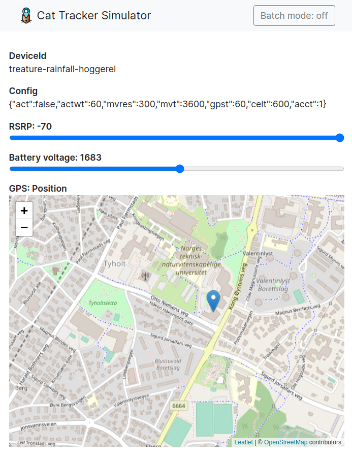

Connect using the simulator
The CLI provides a software implementation of Cat Tracker for testing purposes. It allows the verification of the cloud configuration. This feature is also used for testing the nRF Asset Tracker using continuous integration.
To connect to a device and control the device using the simulator, complete the following steps:
Create certificates for the device.
Run the device simulator.
Use the device simulator UI to control the simulated device.
Creating certificates for the device
To create certificates for a simulated device, run the following command:
node cli create-device-cert
Running the device simulator
To run a simulated device using the generated certificate, run the following command:
The device simulator will print an endpoint to use with the device simulator UI.
Using the device simulator UI
The device-ui project provides a browser-based UI to control the simulated device.

Device simulator UI
Clone the project and install dependencies
Clone the device-ui project and install the dependencies:
git clone --branch v1.5.x --single-branch \ https://github.com/NordicSemiconductor/asset-tracker-cloud-device-ui-js device-ui cd device-ui npm ci
Run the device simulator UI
To run the device simulator UI, use the following command:
npm run
After executing the above command, copy the endpoint printed above (for example, http://localhost:25336) and use it in the simulator UI.